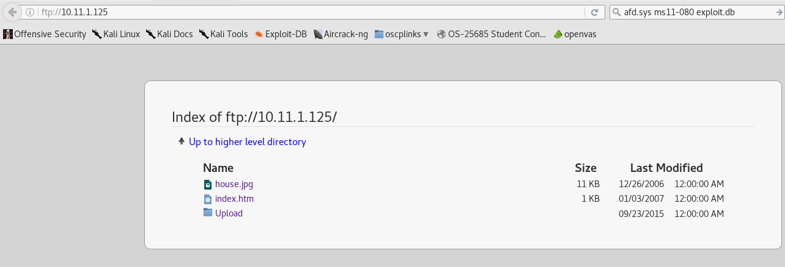

https://www.exploit-db.com/exploits/12480/
root@kali:~/gen/ftp# ftp 10.11.1.125
Connected to 10.11.1.125.
220 Femitter FTP Server ready.
Name (10.11.1.125:root): ftp
331 Password required for ftp.
Password:
230 User ftp logged in.
Remote system type is UNIX.
Using binary mode to transfer files.
ftp> ls
200 Port command successful.
150 Opening data connection for directory list.
drw-rw-rw- 1 ftp ftp 0 Sep 23 2015 .
drw-rw-rw- 1 ftp ftp 0 Sep 23 2015 ..
-rw-rw-rw- 1 ftp ftp 11164 Dec 26 2006 house.jpg
-rw-rw-rw- 1 ftp ftp 920 Jan 03 2007 index.htm
drw-rw-rw- 1 ftp ftp 0 Feb 10 02:38 Upload
226 File sent ok
ftp> cd ..
501 CWD failed. No permission
ftp> ls
200 Port command successful.
150 Opening data connection for directory list.
drw-rw-rw- 1 ftp ftp 0 Sep 23 2015 .
drw-rw-rw- 1 ftp ftp 0 Sep 23 2015 ..
-rw-rw-rw- 1 ftp ftp 11164 Dec 26 2006 house.jpg
-rw-rw-rw- 1 ftp ftp 920 Jan 03 2007 index.htm
drw-rw-rw- 1 ftp ftp 0 Feb 10 02:38 Upload
226 File sent ok
ftp> cd ..
501 CWD failed. No permission
ftp> cd upload
250 CWD command successful. "/C:/Program Files/Femitter/Shared/upload" is current directory.
ftp> ls
200 Port command successful.
150 Opening data connection for directory list.
drw-rw-rw- 1 ftp ftp 0 Feb 10 02:38 .
drw-rw-rw- 1 ftp ftp 0 Feb 10 02:38 ..
-rw-rw-rw- 1 ftp ftp 26198 Feb 10 02:38 shell.php
-rw-rw-rw- 1 ftp ftp 28 Dec 26 2006 uploaded.txt
226 File sent ok
ftp>
